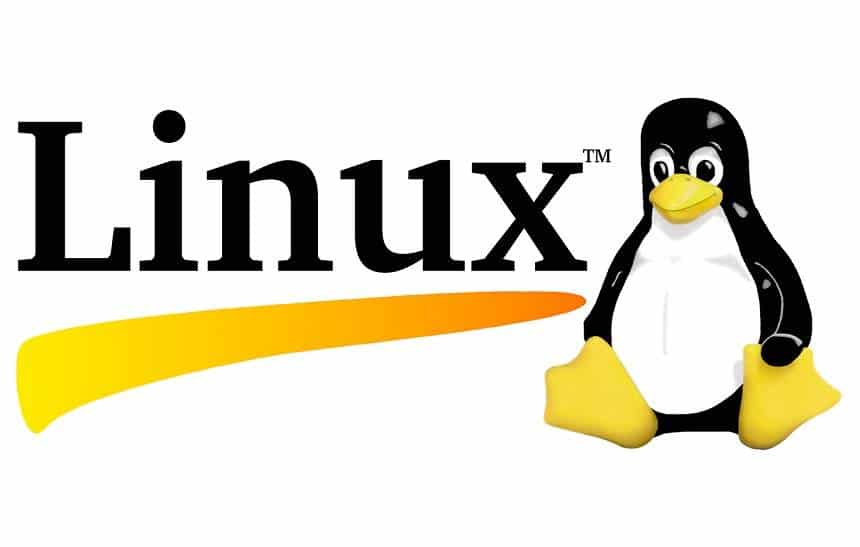

Um sistema operacional (SO) é um software fundamental que gerencia o hardware e os recursos de um computador, além de fornecer serviços essenciais para que outros programas possam funcionar. Ele atua como uma ponte entre o usuário e o hardware do computador, facilitando a execução de tarefas e garantindo que os recursos sejam utilizados de forma eficiente. Funções principais de um sistema operacional: Gerenciamento de Processos: Controla os programas em execução, aloca tempo de processamento da CPU e garante que eles sejam executados de forma ordenada. Gerenciamento de Memória: Organiza a memória RAM, garantindo que os aplicativos em execução tenham o espaço necessário para funcionar. Gerenciamento de Armazenamento: Controla como os dados são armazenados e acessados no disco rígido ou em outros dispositivos de armazenamento. Gerenciamento de Dispositivos: Coordena a comunicação entre o computador e seus periféricos, como teclado, mouse, impressoras e outros. Interface com o Usuário: Oferece uma interface gráfica (GUI) ou linha de comando (CLI) para que o usuário interaja com o sistema. Exemplos de sistemas operacionais: Windows (Microsoft) Linux (ex.: Ubuntu, Fedora, Debian) macOS (Apple) Android e iOS (para dispositivos móveis) Os sistemas operacionais são indispensáveis para o funcionamento de qualquer dispositivo, seja ele um computador, smartphone ou até mesmo um eletrodoméstico moderno.
Esses sistemas são aqueles que têm distribuição gratuita, ou seja, você não precisa pagar para utilizá-lo na sua máquina. O mais famoso dentre esses sistemas é com certeza o Linux. Basta que o usuário instale esse sistema livre na máquina e assim poderá usá-la sempre problemas. Muitos acreditam que os computadores já vêm da loja com o Windows, mas na verdade quando você compra a sua máquina pode escolher se compra ou não o sistema operacional junto. Dessa forma você paga pelo sistema operacional também na hora da compra. Com o sistema livre você não terá esse gasto, mas preciso ter bem claro que ele não será exatamente como um sistema pago. Além disso, é um pouco complicado conseguir compatibilidade entre os programas de sistemas livres e Windows, por exemplo. Essa falta de compatibilidade é proposital em grande parte dos casos para evitar que os usuários migrem para os sistemas livres.
Linux, FreeBSD, OpenSolaris, FreeDOS, Haiku.
Sistemas proprietários são programas desenvolvidos e controlados por empresas ou indivíduos que detêm os direitos autorais e limitam o acesso ao código-fonte. Os usuários não podem acessar o código-fonte ou têm acesso restrito a ele, limitando suas capacidades de alteração e distribuição do software
Windows, macOS, iOS, PlayStation.
Na informática , é denominado software de sistema ou software base para a série de programas pré-instalados no computador ou sistema computacional e que permitem a interação com o Sistema Operacional (o software que rege o funcionamento de todo o sistema e garante sua operabilidade) , para apoiar outros programas e garantir o controle digital do hardware .
Sistemas Operacionais, Drivers de Dispositivos, Utilitários de Sistema.
Um software de aplicativo, também conhecido como software de aplicação, é um programa de computador desenvolvido para ajudar o usuário a realizar tarefas específicas ou resolver problemas particulares. Diferentemente dos softwares de sistema, que gerenciam o hardware e fornecem uma plataforma para outros softwares, os aplicativos são voltados para o uso direto pelo usuário.
Microsoft Word, Google Docs, Microsoft Excel, Google Sheets, Google Chrome, Mozilla Firefox, WhatsApp, Microsoft Teams, Adobe Photoshop, Final Cut Pro, Spotify, Netflix.
Software de programação, também conhecido como ambiente de desenvolvimento ou ferramenta de desenvolvimento, é um tipo de software utilizado por desenvolvedores para criar, testar e manter outros softwares. Esses softwares oferecem um ambiente adequado para a escrita, edição e depuração de código-fonte.
Visual Studio, IntelliJ IDEA, Eclipse, PyCharm, Visual Studio Code, Sublime Text, Atom, Notepad++, GCC, JDK, Python Interpreter, Git, Subversion (SVN).